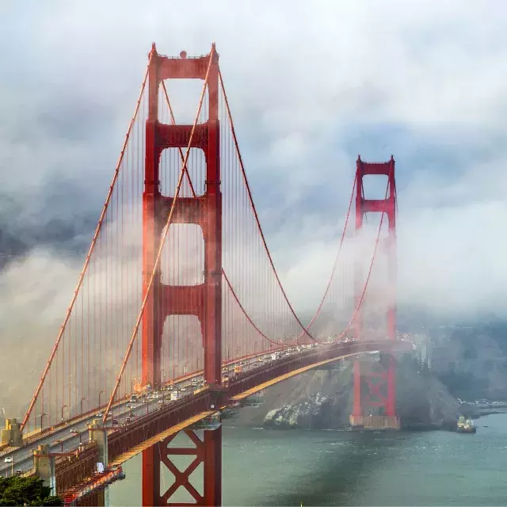
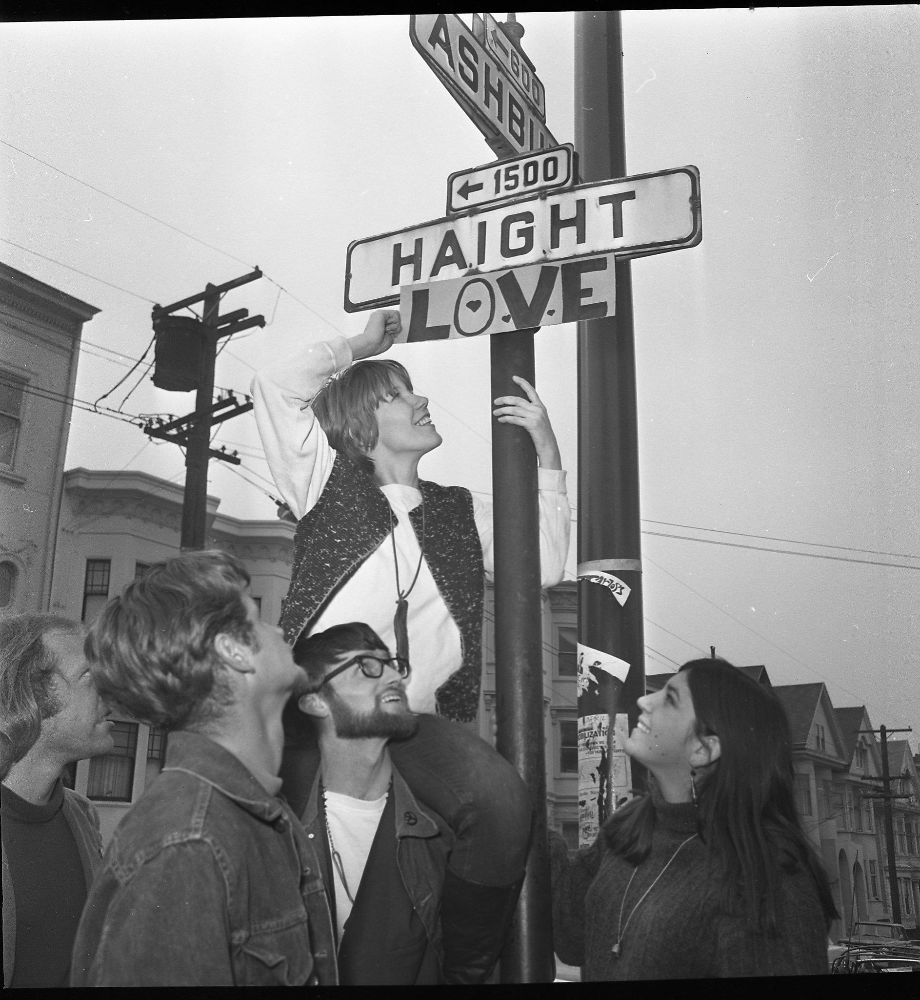

The Yay Area
The Bay Area is the place I grew up in and will always be my first home. It is a beautiful place full of rich history from activism to music. The diversity and culture make the Bay Area unlike any place I have been before. From the hippie counterculture of the 60's to the hyphy movement of the early 2000's the Bay Area has always been known to influence the outside world.
The Golden Gate Bridge is an iconic symbol of the Bay Area known the world over for its beauty and engineering. Haight Ashbury is another famous location in the Bay Area known for being the center of the hippie movement in the 1960's. These locations are just a couple of many that make the Bay Area special.
 